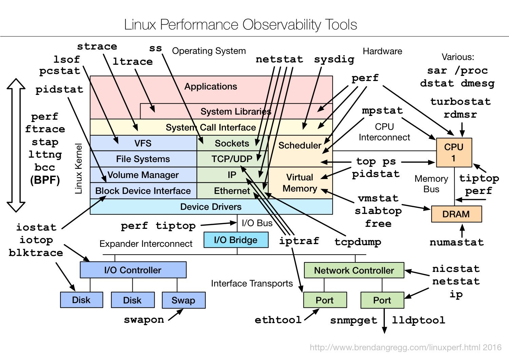

Monitoring¶
Some useful links to cover the basics of Monitoring
Concepts¶
{kind=link}
- https://www.datadoghq.com/blog/monitoring-101-alerting/
- https://blog.serverdensity.com/what-ive-learnt-from-using-ansible-exclusively-for-2-years/
- https://blog.serverdensity.com/80-linux-monitoring-tools-know/
- https://serversforhackers.com/monitoring-processes-with-supervisord
- http://supervisord.org/
Nagios¶
- http://nagios.sourceforge.net/docs/nagioscore/4/en/toc.html
- http://users.telenet.be/mydotcom/howto/nagios/index.html
- http://www.linuxquestions.org/questions/linux-newbie-8/nagios-internal-server-error-903798/
What Nagios does¶
- Monitoring of network services (SMTP, POP3, HTTP, NNTP, ICMP, SNMP, FTP, SSH)
- Monitoring of host resources (processor load, disk usage, system logs) on a majority of network operating systems, including Microsoft Windows with the NSClient++ plugin or Check MK.
- Monitoring via remotely run scripts via Nagios Remote Plugin Executor or through SSH or SSL encrypted tunnels.
- Contact notifications when service or host problems occur & get resolved (via e-mail, pager, SMS, or any user-defined method through plugin system)
- The ability to define event handlers to be run during service or host events for proactive problem resolution. Automatic log file rotation. Support for implementing redundant monitoring hosts
- An optional web-interface for viewing current network status, notifications, problem history, log files, etc. Data storage via text files rather than database
Configuration¶
Host / Service Monitoring¶
Deploying SSH Checks For Nagios¶
- http://tecadmin.net/monitor-remote-linux-system-nagios-via-ssh/
- http://www.techrepublic.com/blog/linux-and-open-source/remotely-monitor-servers-with-the-nagios-check-by-ssh-plugin/
- http://www.opensourceforu.com/2011/07/nagios-setup-guide/
- http://tuxradar.com/content/nagios-made-easy
- https://geekpeek.net/nagios-plugin-bash/